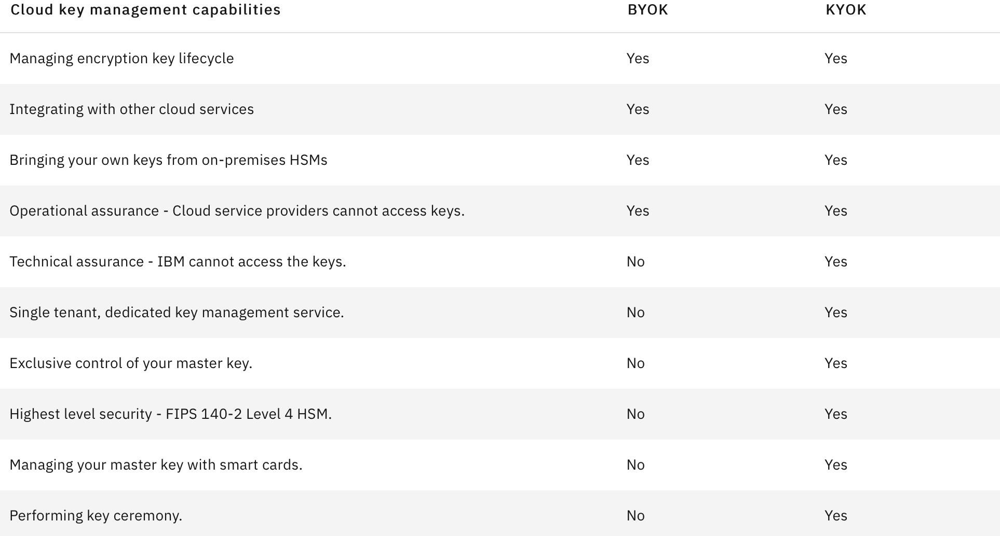

IBM Cloud Hyper Protect Crypto Services
and Unified Key Orchestrator
WAYS TO WATCH
In addition to the embedded video, IBMers and Business Partners can also download the recording from Seismic.
Welcome to the IBM Cloud Hyper Protect Crypto Services hands-on demonstration, where sellers and business partners will have the opportunity to test the functionality of the Unified Key Orchestrator across IBM Cloud and AWS environments.
IBM Cloud Hyper Protect Crypto Services (HPCS) provides data encryption that’s protected by a dedicated cloud hardware security module and enables multicloud key management. UKO, a component of HPCS, is what enables key orchestration across these multicloud environments. HPCS is built on FIPS 140-2 Level 4 certified hardware, the highest level in the industry.
Unified Key Orchestrator (UKO) is a multi-cloud key management solution offered as a managed service on IBM Cloud. Built on ‘Keep Your Own Key’ (KYOK), UKO helps enterprises manage their data encryption keys over multiple key stores and across multiple clouds environments. These key environments include managed on-premises stores and keys on IBM Cloud, AWS, and Microsoft Azure. UKO manages and orchestrates these security policies from a single point of control.
BRING YOUR OWN KEY vs. KEEP YOUR OWN KEY
How does the "Keep Your Own Key" (KYOK) approach of UKO differ from "Bring Your Own Key" (BYOK)?
-
BYOK is a way for clients to use their own keys to encrypt data. Key management services that provide BYOK are typically multi-tenant services. With these services, users can import encryption keys from on-premises hardware security modules (HSM) and then manage the keys.
-
KYOK includes all of the capabilities of BYOK, but also provides technical assurances that IBM cannot access a client's keys. With KYOK, clients have exclusive control of the entire key hierarchy, including that of the master key.
The following table provides further details on the differences between BYOK and KYOK:

Key benefits to HPCS clients
-
Lifecycle management for keys: A GUI and a REST API track keys as they progress. Deleted data is no longer retrievable, regardless of the application that stored it. Learn more.
-
Encryption for IBM Cloud services: IBM Cloud services can integrate with this product. Clients receive a common-key-provider API for a consistent approach in IBM Cloud adoption. Learn more.
-
Multicloud key management: Extend protection across cloud deployments. Manage all keys in one place, with added protection and simplicity. Learn more.
-
Security certification: The service is built on FIPS 140-2 Level-4-certified hardware—the highest offered by any cloud provider in the industry. Learn more.
-
HSM control: Single-tenant, dedicated HSMs are controlled by you. IBM Cloud administrators have no access. Learn more.
-
Key ceremony: IBM is the first to provide cloud command-line interface (smart cards) for the HSM key ceremony. Learn more.
Next steps
In the following section, you will need to review the pre-requisites and follow the provisioning instructions for setting up your IBM Technology Zone environment.